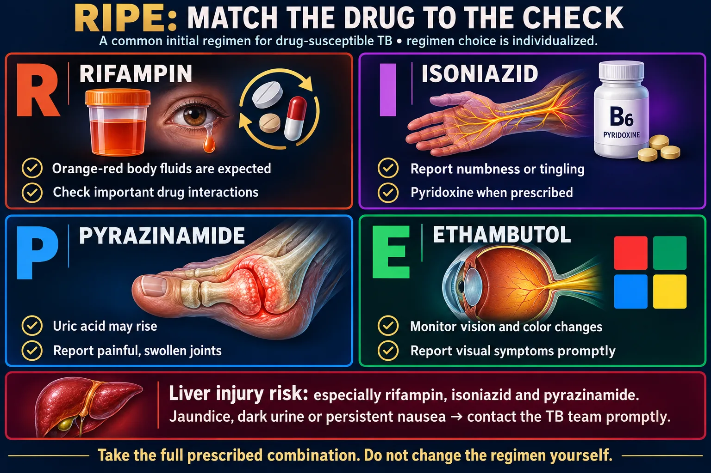

RIPE, what each drug does to the patient, and the teaching points that carry the marks.

A common initial regimen for drug-susceptible TB, with distinct monitoring priorities.
🔍 Open full-size imageTB is treated with four drugs at once for months, not one drug for a week. Two reasons, and both are asked.
Stopping early is what creates multi-drug-resistant TB. That is the reason adherence teaching matters more here than almost anywhere else.
Directly observed therapy (DOT). A health-care worker watches the patient swallow every dose. It is not distrust — it is the intervention with the best evidence for preventing resistance, and it is the correct answer when a stem describes a patient who keeps missing doses.
| Drug | The effect you watch for | Teaching |
|---|---|---|
| Rifampin | Orange-red discoloration of urine, sweat, tears, saliva — harmless and expected. Hepatotoxic. A strong enzyme inducer. | Will permanently stain soft contact lenses. Makes oral contraceptives fail — a second method is needed. Interacts with warfarin, many HIV drugs, and more. |
| Isoniazid (INH) | Peripheral neuropathy — numbness and tingling in hands and feet. Hepatotoxic. | Give pyridoxine (vitamin B6) to prevent the neuropathy. Avoid alcohol. Avoid tyramine-rich foods (aged cheese, cured meats). |
| Pyrazinamide | Raises uric acid → can trigger gout. Hepatotoxic. | Report a hot, swollen, painful joint. Push fluids. |
| Ethambutol | Optic neuritis — blurred vision and loss of red–green color discrimination. | Baseline and monthly vision testing. Report any vision change immediately — often reversible if caught early — not guaranteed, so report it at once. |
The two that map straight onto a body part. Ethambutol → Eyes. Isoniazid → nerves, so I need B6. Those two associations answer a large share of TB drug questions on their own.
Hepatotoxicity is the shared danger. Rifampin, isoniazid and pyrazinamide are all hard on the liver, and the patient is taking all three together.
Teach the patient to stop and call for nausea, vomiting, anorexia, right upper quadrant pain, dark urine or yellowing of the skin or eyes.
Telling the harmless from the dangerous. Orange urine is expected and needs reassurance. Dark brown urine with yellow sclerae is hepatotoxicity and needs the provider. A stem that describes orange-red tears and asks what the nurse does is checking whether you will wrongly stop the drug.
Latent TB is treated to stop it reactivating — with fewer drugs for a shorter time than active disease, because the bacterial load is tiny. Common regimens are 3 months of weekly isoniazid plus rifapentine, 4 months of daily rifampin, or 6–9 months of daily isoniazid.
Never treat active disease with a single drug — that is exactly how resistance is made. Active disease must be ruled out before latent treatment starts.
From Codex’s 7 Oct review, sources checked that day. For tests and NCLEX-style questions, answer the way your textbook teaches.